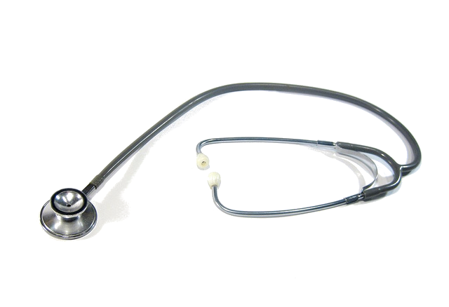
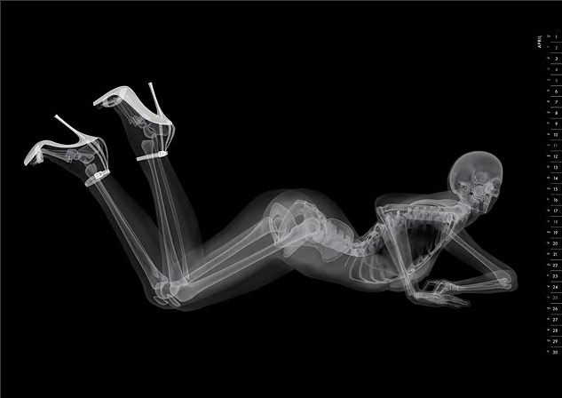

Playing with
Linux Performance Tools


Old School Profiling (1/3)
Old School Profiling (2/3)
- Standard
- Code instrumentation: requires a dedicated compilation (-pg flag)
- Mixes code snooping & stochastical stats sampling
But
- Only profiles the instrumented code
Old School Profiling (3/3)
- No recompilation required
But
- Simulate the instructions (slow, uniform cost, fake cache...)
- Limited to userland
What do we need ?
- Low cost profiling
- More accurate information
- System wide profiling
The new generation
perf: Linux profiling
with performance counters
- Use hardware counters of the PMU
- Accurate for few counters
- Stochastic approach for many counters
- No recompilation
- Performance impact very limited
- System-wide profiling available
How to use perf ?
- You need a CPU with a PMU
- root access rights for system-wide profiling
- DEMO
perf stat -B dd if=/dev/zero of=/dev/null count=100000
100000+0 records in
100000+0 records out
51200000 bytes (51 MB) copied, 0.0331147 s, 1.5 GB/s
Performance counter stats for 'dd if=/dev/zero of=/dev/null count=100000':
33.675664 task-clock # 0.988 CPUs utilized
7 context-switches # 0.000 M/sec
0 CPU-migrations # 0.000 M/sec
245 page-faults # 0.007 M/sec
89,978,400 cycles # 2.672 GHz
29,352,855 stalled-cycles-frontend # 32.62% frontend cycles idle
10,373,332 stalled-cycles-backend # 11.53% backend cycles idle
144,418,913 instructions # 1.61 insns per cycle
# 0.20 stalled cycles per insn
28,045,436 branches # 832.810 M/sec
15,143 branch-misses # 0.05% of all branches
0.034084758 seconds time elapsed
What about instrumentation ?
or why you need System Tap ;)
System Tap allows you to
- Insert probes in the kernel and in user land
- script the data collection & reporting
- Basically any resource can be monitored and/or hooked
How to use System Tap ? (1/3)
#! /usr/bin/env stap
# Monitor removed file on a NFS server
global nfsd_unlink_active, vsf_unlink_success
probe nfsd.unlink
{
nfsd_unlink_active[tid()] = 1;
}
probe nfsd.unlink.return
{
if (vsf_unlink_success[tid()]) {
printf("address %s unlinks %s\n",
ip_ntop(addr_from_rqst($rqstp)),
kernel_string($fname))
delete vsf_unlink_success[tid()]
}
delete nfsd_unlink_active[tid()]
}
probe kernel.function("vfs_unlink").return
{
if (nfsd_unlink_active[tid()] && $return == 0)
vsf_unlink_success[tid()] = 1
} How to use System Tap ? (2/3)
#! /usr/bin/env stap
# This script tries to identify contended user-space locks by hooking
# into the futex system call.
global FUTEX_WAIT = 0 /*, FUTEX_WAKE = 1 */
global FUTEX_PRIVATE_FLAG = 128 /* linux 2.6.22+ */
global FUTEX_CLOCK_REALTIME = 256 /* linux 2.6.29+ */
global lock_waits # long-lived stats on (tid,lock) blockage elapsed time
global process_names # long-lived pid-to-execname mapping
probe syscall.futex.return {
if (($op & ~(FUTEX_PRIVATE_FLAG|FUTEX_CLOCK_REALTIME)) != FUTEX_WAIT) next
process_names[pid()] = execname()
elapsed = gettimeofday_us() - @entry(gettimeofday_us())
lock_waits[pid(), $uaddr] <<< elapsed
}
probe end {
foreach ([pid+, lock] in lock_waits)
printf ("%s[%d] lock %p contended %d times, %d avg us\n",
process_names[pid], pid, lock, @count(lock_waits[pid,lock]),
@avg(lock_waits[pid,lock]))
} How to use System Tap ? (3/3)
Demo !
Conclusion
- Use the right tool for the job
- System-wide analysis is possible
- Enjoy Linux !
Conclusion for Mac/BSD/Solaris addicts
- Use DTrace in place of System Tap
- It's System Tap predecessor and it just works
- Enjoy !
Conclusion for Windows addicts
Sorry ;)
Credits
- Presentation template by sl33p3r
- Motorbike photo by WillVision (CC license)
- Stethoscope photo by SurroundSound5000 (CC license)
- Pin-up image by Eizo